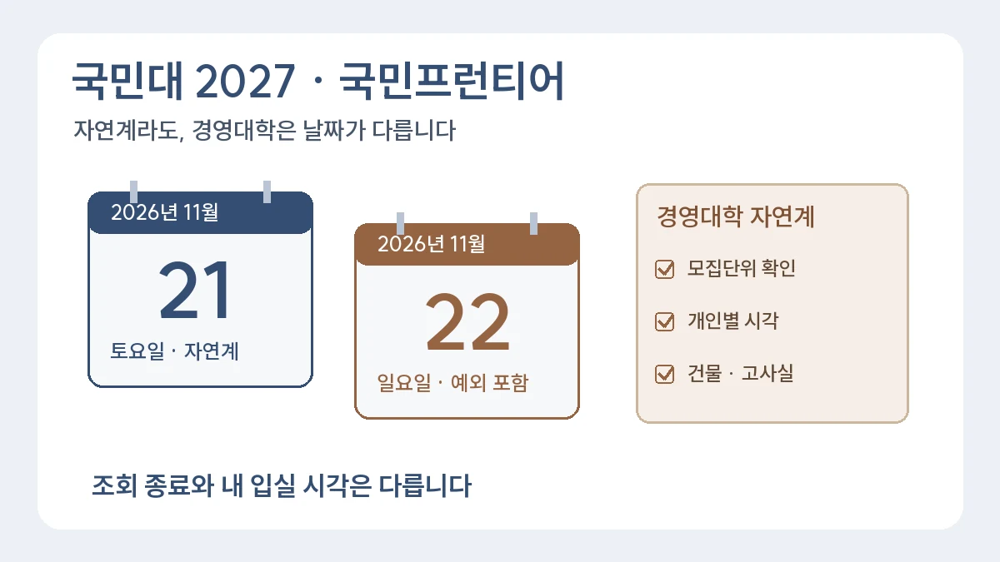

국민대 2027 국민프런티어, 자연계 지원자는 모두 11월 21일 면접일까?
경영대학 자연계 모집단위는 11월 22일 일정에 포함됩니다. 국민대 현재 수시 모집요강과 고사장 조회 안내를 대조해 조회기간·고사일·개인별 지정 시각을 구분하고, 수험표·신분증·복장 및 학생부 복기 카드를 점검합니다.

아닙니다. 국민대 2027학년도 국민프런티어전형은 자연계 면접을 2026년 11월 21일(토)로 안내하지만, 경영대학 자연계 모집단위는 11월 22일(일) 인문계·예체능계 일정에 포함합니다. 모집요강의 큰 계열명만 보고 일정을 정하면 예외를 놓칠 수 있습니다. 최종 확인 대상은 본인의 합격 여부와 개인별 지정 일시·장소입니다.[2]
이 글은 2026년 입시 시즌에 치르는 2027학년도 수시 국민프런티어전형 지원자를 위한 면접 직전 확인 안내입니다. 2028학년도 개편이나 다른 전형의 면접일을 설명하는 글이 아닙니다. 확인·발행일은 2026년 11월 19일(KST)이며, 이미 공개된 모집요강과 현재 열려 있는 고사장 조회 안내를 다시 읽었습니다. 오늘 새 제도가 발표됐다는 뜻은 아닙니다.[1][3]
1. 지금 공개된 것: 1단계 결과와 개인별 면접고사장 조회
11월 19일 확인한 국민대 입학처 메인 화면에는 ‘2027학년도 수시모집 국민프런티어전형 1단계 합격자 발표 및 2단계 면접고사장 안내’가 연결돼 있습니다. 표시된 조회기간은 2026년 11월 17일(화)부터 11월 22일(일) 17:00까지입니다. 이것은 결과·고사장 안내의 조회 가능 기간이지, 모든 지원자가 22일 17시에 면접을 본다는 뜻이 아닙니다.[3]
모집요강의 1단계 결과 발표 및 고사장 안내 예정 시각은 11월 17일 14:00였습니다. 이 글에서는 그 예정 시각과 현재 표시된 조회기간을 구분합니다. 편집팀은 개인 수험정보를 입력하지 않았으므로 개별 합격 여부, 건물·고사실·입실 시각을 확인한 것은 아닙니다. 지원자가 입학처 공식 화면의 해당 전형 ‘조회하기’에서 직접 확인해야 합니다.[2][3]
2. 자연계 21일, 경영대학 자연계는 22일
모집요강 인쇄 10쪽(PDF 14쪽)의 국민프런티어전형 일정은 다음처럼 읽어야 합니다.[2]
- 자연계: 2026년 11월 21일(토), 지정 일시.
- 인문계·예체능계: 2026년 11월 22일(일), 지정 일시. 여기에 경영대학 자연계 모집단위가 포함됩니다.
같은 모집요강 인쇄 7쪽(PDF 11쪽)의 자연계 모집인원 표에는 경영대학의 경영정보학부(자연)와 AI빅데이터융합경영학과(자연)가 따로 있습니다. 이 두 모집단위의 국민프런티어 지원자가 ‘자연계이니 토요일’로 단정하면 안 되는 이유입니다. 학과 이름에 AI나 데이터가 들어가는지보다, 지원한 전형·모집단위가 일정표의 어느 행과 예외에 해당하는지가 먼저입니다.[2]
교육용 확인 연습: 실제 지원자 사례가 아닌, 모집요강을 읽는 연습입니다. ‘국민프런티어 / 경영정보학부(자연)’라고 적힌 지원내역을 보았다면 ① 자연계 모집 표에서 소속 대학 확인 ② 일정표에서 ‘경영대학 자연계 포함’ 확인 ③ 22일 일정임을 메모 ④ 개인별 조회 화면에서 지정 시각과 장소 확인 순서로 대조합니다. 마지막 조회를 하기 전까지 시간·고사실 칸은 추측해 채우지 않습니다.
3. 조회기간·고사일·입실 시각을 한 칸에 적지 마세요
모집요강 인쇄 70쪽(PDF 74쪽)은 일시·장소가 지원 인원에 따라 조정될 수 있고 개별 통보하지 않으므로 입학처 홈페이지에서 개인별 지정 일시·장소를 반드시 확인하도록 안내합니다. 개인별 지정 일시는 바꿀 수 없고, 고사 시작시간 이후 도착하면 입실할 수 없다고 명시합니다. 따라서 일반 일정표만으로 교통편을 확정하기보다 본인의 고사장 안내와 수험생 유의사항을 함께 확인해야 합니다.[2]
다음은 편집팀이 제안하는 면접 운영 확인 카드입니다. 대학의 공식 제출 양식이 아니며, 가족·담임과 이동 계획을 점검하는 개인 메모로 쓰세요. 수험번호·생년월일이 보이는 조회 화면은 공개 단체방에 올리지 않는 편이 안전합니다.
- 지원내역: 2027학년도 / 국민프런티어 / 정확한 모집단위명(자연 등 괄호까지).
- 조회 화면: 1단계 합격 여부, 확인한 날짜·시각, 공식 고사장 안내를 저장한 위치.
- 실제 응시: 고사일, 개인별 지정 시각, 입실 관련 별도 안내, 건물명·고사실. 조회 종료 시각과 별도 칸에 적기.
- 당일 준비: 수험표, 인정되는 신분증, 복장, 대중교통·도보 경로. 출발 전에 변경 공지 재확인.
고치기 전: “국민대 자연계, 21일. 주말 오전에 가면 된다.”
고친 뒤: “국민프런티어 경영정보학부(자연)는 모집요강상 22일 일정에 포함된다. 내 지정 시각과 건물·고사실은 공식 조회 후 각각 적고, 별도 입실 안내를 확인해 이동 계획을 정한다.” 이 예시는 정확한 응시 정보를 확인하는 문장 연습이지, 어떤 지원자의 실제 배정 결과가 아닙니다.
4. 수험표·신분증·복장은 어디까지 확인해야 할까
같은 유의사항은 고사 당일 수험표와 신분증을 모두 지참하도록 하고, 수험표가 없으면 입실할 수 없다고 안내합니다. 인정 신분증은 주민등록증, 운전면허증, 주민자치센터 발급 사진 부착 임시신분증, 유효기간이 남은 여권, 사진 부착 청소년증, 장애인등록증 또는 장애인복지카드입니다. 평소 사용하는 학생증만으로 충분하다고 가정하지 말고 목록을 대조하세요.[2]
학생부종합전형 공통사항 인쇄 16쪽(PDF 20쪽)은 2단계 면접에서 교복·교표 등 고등학교를 확인하거나 추측할 수 있는 복장을 금지합니다. 별도로 게시되는 ‘고사장 안내 및 수험생 유의사항’도 확인해야 합니다. 휴대전화 보관, 대기실 자료 이용, 구체적인 집합 시각처럼 개인별 안내를 보지 않고 확인할 수 없는 조건은 이 글에서 임의로 정하지 않습니다.[2]
5. 운영 확인 뒤에는 새 보고서보다 학생부 복기 카드 한 장
국민프런티어는 모집요강 인쇄 18쪽(PDF 22쪽)에서 1단계 서류평가로 3배수를 선발하고, 2단계는 1단계 성적 70%와 면접 30%로 평가한다고 안내합니다. 면접은 공통사항 기준으로 입학사정관 2인과 지원자 1인이 진행하는 10분 이내 개별 블라인드 면접이며, 학교생활기록부를 평가자료로 하는 제출서류 확인면접입니다. 국민프런티어의 면접 평가항목은 진로역량 40점, 학업역량 30점, 공동체역량 30점입니다.[2]
따라서 편집팀은 운영 확인 카드와 별도로 학생부에 이미 남은 활동 한 건의 복기 카드를 만들어 보시길 제안합니다. 대학이 면접에서 탐구보고서를 별도 제출·채점한다는 뜻은 아닙니다. 공통사항은 평가에 영향을 줄 수 있는 증빙서류의 추가 제출을 허용하지 않습니다. 새 결과물을 들고 가서 설명하겠다는 계획보다, 제출된 기록에서 질문·개념·선택·수정 과정을 말로 설명하는 연습에 집중하세요.[2]
교육용 가상 사례 — 급식 잔반량 예측 탐구: 다음은 실제 학생의 활동이나 국민대 기출이 아니라 편집팀이 만든 복기 연습입니다. 실제 기록과 경험에 없는 내용을 자신의 활동처럼 말하면 안 됩니다.
- 기록에서 출발: 학생부에 ‘자료를 정리해 예측 방법을 비교했다’고 적혔다면, 어떤 자료와 비교 기준을 실제로 사용했는지 먼저 확인합니다.
- 개념 설명: ‘예측이 정확했다’는 말 대신 예측값과 실제값의 차이를 어떤 기준으로 비교했는지, 그 기준을 왜 골랐는지 설명할 수 있는지 점검합니다.
- 협업 설명: 팀의 결론만 말하지 말고 자료 정리 방식에 다른 의견이 있었는지, 공통 기준을 어떻게 정했는지 자신이 경험한 범위에서 복기합니다.
- 한계와 구분: 실제로 비교하지 못한 조건은 ‘비교하지 못했다’고 말하고, 다음에 해 보고 싶은 일은 수행한 결과와 구분해 적습니다.
고치기 전 답변: “AI로 급식 문제를 해결했고 팀원들과 잘 협력했습니다.”
고친 뒤 답변 틀: “제가 확인한 질문은 [실제 질문]입니다. [자료]를 [비교 기준]으로 살폈고, 저는 [본인 역할]을 맡았습니다. 의견이 달랐던 [쟁점]에서는 [함께 정한 기준]을 적용했습니다. 다만 [확인하지 못한 조건] 때문에 [결론의 범위]까지만 설명할 수 있습니다.” 빈칸은 실제 경험으로만 채우세요. 이 틀과 평가항목의 대응은 편집팀의 학습 제안이며 대학의 공식 답안·득점 공식이 아닙니다.
6. 오늘 할 일과 다음 확인 시점
- 오늘: 입학처 메인의 국민프런티어 1단계 결과·2단계 고사장 조회에서 합격 여부와 본인 일시·장소를 확인합니다. 22일 17시 조회 종료를 내 입실 시각으로 옮겨 적지 않습니다.
- 이동 계획 전: 경영대학 자연계 예외와 정확한 모집단위명을 대조하고, 수험표·신분증·고사장 안내를 준비합니다.
- 준비 연습: 학생부 활동 한 건을 골라 실제 자료 선택·본인 역할·한계를 적고, 답변을 들은 사람이 “그 판단의 근거는 무엇인가요?”를 한 번 묻게 합니다. 새로운 사실을 덧붙이기보다 빠진 설명을 고칩니다.
- 출발 전: 공식 입학처의 변경 공지와 개인별 안내를 다시 확인합니다. 이 글은 개인별 조회를 대신하지 않습니다.
모집요강 파일명에는 ‘2026.09.09’가 들어 있지만, 그것만으로 공고 게시일을 확정하지 않았습니다. 이번 확인에서는 입학처의 현재 수시 모집요강 메뉴가 지정한 PDF를 기준으로 삼았습니다. 6월 22일 재게시 공고는 어학특기자 TOEFL 성적 안내 문구에 관한 것이므로 국민프런티어 면접의 새 변경 공고로 설명하지 않습니다. 이후 개인별 안내나 수정 공지가 달라지면 그 내용을 우선 확인해야 합니다.[1][4]
7. 관련 가이드와 이번 글의 역할
이번 글은 국민대 국민프런티어의 계열별 고사일 예외와 개인별 응시 정보 확인이 중심입니다. 일반적인 답변 구조는 학생부 기반 면접 준비 가이드, 근거를 되묻는 연습은 꼬리질문 점검표에서 이어가세요. 건국대 KU자기추천의 2단계 절차 해설은 다른 대학·전형의 사례입니다. 그 전형료 규정을 국민대에 그대로 적용하면 안 됩니다.
이 글의 카드·연습 사례는 편집팀의 교육용 제안입니다. 실제 면접 질문, 합격 가능성, 점수 상승을 예측하지 않습니다. 공식 문항·도표·사진을 재게시하지 않았으며, 별도의 사람 검토나 대학의 감수를 받은 글은 아닙니다.
8. 공식 출처와 확인 범위
2026년 11월 19일(KST) 공식 원문을 확인했습니다. 모집요강 인쇄 쪽수와 PDF 파일의 물리적 쪽수를 함께 표기했습니다. PDF 주요 확인 위치는 모집단위 표 인쇄 7쪽/PDF 11쪽, 일정 인쇄 10쪽/PDF 14쪽, 평가 공통사항 인쇄 16쪽/PDF 20쪽, 국민프런티어 인쇄 18쪽/PDF 22쪽, 지원자 유의사항 인쇄 70쪽/PDF 74쪽입니다. 개인별 조회 결과와 별도 수험생 유의사항의 로그인 후 내용은 확인하지 않았습니다.
- [1] 국민대 입학처 2027 수시 모집요강 지정 메뉴
- [2] 국민대 2027 수시 모집요강 — 현재 지정본
- [3] 국민대 입학처 메인 — 합격자·고사장 안내
- [4] 국민대 2027 수시 모집요강 재게시 공고
이 칼럼은 운영자의 관점과 일반 교육 정보를 담고 있으며 특정 대학 합격이나 평가 결과를 보장하지 않습니다.
함께 볼 글

학생부 기반 면접 준비: 영역별 활동 복기와 꼬리질문·STAR·PREPNEW
세특·창체·공동체 활동을 동기·과정·결과·성찰로 정리하고 실제 기여와 한계를 설명하는 서류 기반 면접 연습법입니다.

학생부 기반 대입 면접 꼬리질문 점검표: 주장·근거·한계 연결하기NEW
보고서의 핵심 주장에 조건과 반대 질문을 붙여, 근거를 찾을 수 있는 답변과 아직 확인하지 못한 답변을 구분합니다.